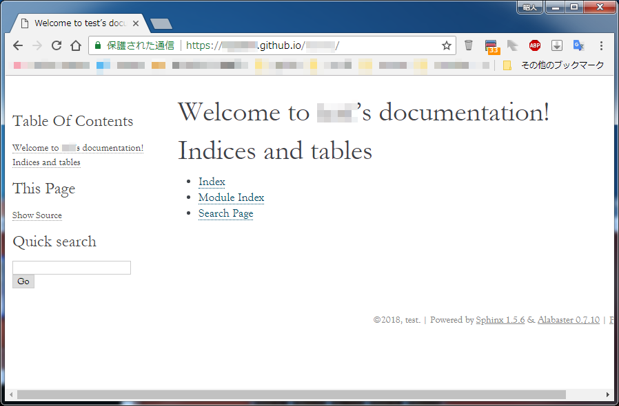

Sphinx でドキュメントを作って github pages で公開する方法¶
はじめに¶
このページでは github pages と Sphinx を使って、ブログ風のホームページを無料で作る方法を説明する。 ある程度 github とか linux の知識ないと難しいかもしれん。 2018/05/16 現在の情報で書いてるで。
参考ページ¶
お世話になったページ。 もうここ見た方が早いかもしれん。
用語解説¶
- git
- ソースコード・ドキュメントなどのバージョンを管理するシステム
- github
- git をネットに保存・公開できるウェブサービス
- github pages
- github に html などを保存すると、Webページ として見ることができる github のサービス
- Sphinx
- ドキュメントを簡単に作れるツール。作成したドキュメントは、 html 含め様々な形式で出力可能
前提¶
- github pages の種類
作成までの流れ¶
ほんま簡単に書くと以下の流れになる。
- github に自分のアカウントを登録
- Sphinx をインストール
- ドキュメントを作成しgithubに公開
github に自分のアカウントを登録¶
まずは github に自分のアカウントを登録や。 最終的なWebページのURLは↓のようになるからな！ 変な名前にせんようにしないと。
https://<アカウント名>.github.io/
<アカウント名>.github.io にすること！Sphinx をインストール¶
Sphinx には python が必要。Windows に python を入れることもできるけど、VM上にインストールやる方法で。 PC上にVirtualBoxでcentOS7をインストールした後に、↓のページの1.～3. を実施すること。
ドキュメントを作成しgithubに公開¶
sphinx には sphinx-quickstart という勝手にサンプルページを作ってくれるコマンドがある。このコマンドでhtmlページを作る！ sphinx-quickstart はたくさんのオプションがあるけど詳細は↓をみて。
・http://sphinx-users.jp/gettingstarted/sphinxquickstart.html
# 作業ディレクトリを作成して移動
[test_user@localhost ~]$ mkdir sphinx ; cd sphinx ; pwd
/home/test_user/sphinx
# サンプルページ作成
[test_user@localhost sphinx]$ sphinx-quickstart
Welcome to the Sphinx 1.5.6 quickstart utility.
...
# 入力は以下の３つ。それ以外はデフォルトでいいから Enterキー 連打で。
# > Separate source and build directories (y/N) [n]: y
# > Project name: <プロジェクト名>
# > Author name(s): <作成者名>
# フォルダ構成
[test_user@localhost sphinx]$ pwd;find . | sort | sed '1d;s/^\.//;s/\/\([^/]*\)$/|--\1/;s/\/[^/|]*/| /g'
/home/test_user/sphinx
|--Makefile
|--build
|--make.bat
|--source
| |--_static
| |--_templates
| |--conf.py
| |--index.rst
# とりあえずサンプルページを html 出力してみる！
[test_user@localhost sphinx]$ make html
Running Sphinx v1.5.6
making output directory...
loading pickled environment... not yet created
building [mo]: targets for 0 po files that are out of date
building [html]: targets for 1 source files that are out of date
updating environment: 1 added, 0 changed, 0 removed
reading sources... [100%] index
looking for now-outdated files... none found
pickling environment... done
checking consistency... done
preparing documents... done
writing output... [100%] index
generating indices... genindex
writing additional pages... search
copying static files... done
copying extra files... done
dumping search index in English (code: en) ... done
dumping object inventory... done
build succeeded.
Build finished. The HTML pages are in build/html.
# 作成されたものを確認
[test_user@localhost sphinx]$ pwd;find . | sort | sed '1d;s/^\.//;s/\/\([^/]*\)$/|--\1/;s/\/[^/|]*/| /g'
/home/test_user/sphinx
|--Makefile
|--build
| |--doctrees
| | |--environment.pickle
| | |--index.doctree
| |--html
| | |--.buildinfo
| | |--_sources
| | | |--index.rst.txt
| | |--_static
| | | |--ajax-loader.gif
| | | |--alabaster.css
| | | |--basic.css
| | | |--comment-bright.png
| | | |--comment-close.png
| | | |--comment.png
| | | |--custom.css
| | | |--doctools.js
| | | |--down-pressed.png
| | | |--down.png
| | | |--file.png
| | | |--jquery-3.1.0.js
| | | |--jquery.js
| | | |--minus.png
| | | |--plus.png
| | | |--pygments.css
| | | |--searchtools.js
| | | |--underscore-1.3.1.js
| | | |--underscore.js
| | | |--up-pressed.png
| | | |--up.png
| | | |--websupport.js
| | |--genindex.html
| | |--index.html
| | |--objects.inv
| | |--search.html
| | |--searchindex.js
|--make.bat
|--source
| |--_static
| |--_templates
| |--conf.py
| |--index.rst
# ./build/html フォルダ内を github に公開する！
# ディレクトリ移動
[test_user@localhost sphinx]$ cd ./build/html/ ; pwd ; ls -l
/home/test_user/sphinx/build/html
合計 24
drwxrwxr-x 2 test_user test_user 27 6月 1 16:07 _sources
drwxrwxr-x 2 test_user test_user 4096 6月 1 16:07 _static
-rw-rw-r-- 1 test_user test_user 2588 6月 1 16:07 genindex.html
-rw-rw-r-- 1 test_user test_user 3868 6月 1 16:07 index.html
-rw-rw-r-- 1 test_user test_user 236 6月 1 16:07 objects.inv
-rw-rw-r-- 1 test_user test_user 3088 6月 1 16:07 search.html
-rw-rw-r-- 1 test_user test_user 255 6月 1 16:07 searchindex.js
# リポジトリ作成
[test_user@localhost html]$ git init
Initialized empty Git repository in /home/test_user/sphinx/build/html/.git/
# コミット
[test_user@localhost html]$ git add .
[test_user@localhost html]$ git commit -m "first commit"
[master (root-commit) 0da0fbe] first commit
29 files changed, 14692 insertions(+)
create mode 100644 .buildinfo
create mode 100644 _sources/index.rst.txt
create mode 100644 _static/ajax-loader.gif
create mode 100644 _static/alabaster.css
create mode 100644 _static/basic.css
create mode 100644 _static/comment-bright.png
create mode 100644 _static/comment-close.png
create mode 100644 _static/comment.png
create mode 100644 _static/custom.css
create mode 100644 _static/doctools.js
create mode 100644 _static/down-pressed.png
create mode 100644 _static/down.png
create mode 100644 _static/file.png
create mode 100644 _static/jquery-3.1.0.js
create mode 100644 _static/jquery.js
create mode 100644 _static/minus.png
create mode 100644 _static/plus.png
create mode 100644 _static/pygments.css
create mode 100644 _static/searchtools.js
create mode 100644 _static/underscore-1.3.1.js
create mode 100644 _static/underscore.js
create mode 100644 _static/up-pressed.png
create mode 100644 _static/up.png
create mode 100644 _static/websupport.js
create mode 100644 genindex.html
create mode 100644 index.html
create mode 100644 objects.inv
create mode 100644 search.html
create mode 100644 searchindex.js
# リモートリポジトリ(つまりgithub)へpush!!!
[test_user@localhost html]$ git remote add origin https://github.com/<アカウント名>/<アカウント名>.github.io.git
[test_user@localhost html]$ git push -u origin master
Username for 'https://github.com': <アカウント名>
Password for 'https://<アカウント名>@github.com': <パスワード>
Counting objects: 33, done.
Compressing objects: 100% (31/31), done.
Writing objects: 100% (33/33), 151.16 KiB | 0 bytes/s, done.
Total 33 (delta 2), reused 0 (delta 0)
remote: Resolving deltas: 100% (2/2), done.
To https://github.com/<アカウント名>/<アカウント名>.github.io.git
* [new branch] master -> master
Branch master set up to track remote branch master from origin.
確認作業¶
これで準備完了！github pagesにアクセスしてみよう。
- https://<アカウント名>.github.io
なんか CSS が正しく処理されてない。。Jekyllという処理エンジンが悪さをしているらしい。なのでこれを無効にする。具体的には、 .nojekyll という空ファイルをルートに置く！
# 空ファイル作成
[test_user@localhost html]$ touch .nojekyll
# ローカルリポジトリにコミット
[test_user@localhost html]$ git add .nojekyll
[test_user@localhost html]$ git commit -m 'add .nojekyll'
[master cd8f3df] add .nojekyll
1 file changed, 0 insertions(+), 0 deletions(-)
create mode 100644 .nojekyll
# github へ push!!!
[test_user@localhost html]$ git push -u origin master
Username for 'https://github.com': <アカウント名>
Password for 'https://<アカウント名>@github.com': <パスワード>
Counting objects: 4, done.
Compressing objects: 100% (2/2), done.
Writing objects: 100% (3/3), 269 bytes | 0 bytes/s, done.
Total 3 (delta 1), reused 0 (delta 0)
remote: Resolving deltas: 100% (1/1), completed with 1 local object.
To https://github.com/<アカウント名>/<アカウント名>.github.io.git
0da0fbe..cd8f3df master -> master
Branch master set up to track remote branch master from origin.
もっかいgithub pagesにアクセスしてみよう。
うまくいってそう♪
本ページはここまで。ドキュメントを更新する場合、 ./source/ ディレクトリ内に *.rst を作っていったらええらしい。